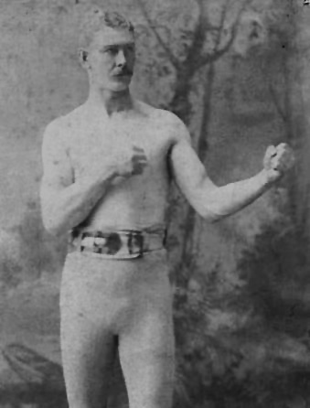

 Pat Killen
(Patrick Killen)
BORN December 25 1861; Haddington, Pennsylvania DIED October 21 1891 (was killed) HEIGHT 6-1 WEIGHT 190-210 lbs RACE White; Irish-American MANAGER W.F. Gooding
Killen was an extremely dangerous hitter; A patient fighter with a devastating punch, he could take a man out with one blow; He was probably a better one-punch knockout hitter than John L. Sullivan but was less durable than the famous champion
Killen was Champion of the "Northwest" United States during his career; Historian George Blair rates Killen as the 7th best All-Time Minnesota Heavyweight1883 Jul 6 John Howard Philadelphia, Pa KO 2 Sep 8 Hial Stoddard Philadelphia, Pa KO 1 1884 Apr 2 Tom Boylan KO 5 1885 May 3 Denny Kelliher Philadelphia, Pa KO 4 Aug 2 John Lynch Philadelphia, Pa KO 3 Sep 3 Jack Morrison Chicago, Il KO 2 Oct 8 Joe Lannon St. Paul, Mn TK 9 -Some sources report 11/15/85; Some sources report "W 8" -Reports state that Killen went east after his match with Lannon and returned a much improved fighter, having scored over 30 knockouts in a year 1886 Jan 6 Pat McHugh Chicago, Il KO 4 Feb 5 Dick Burke Chicago, Il KO 1 Feb 26 George Gray Louisville, Ky KO 2 Apr 2 Mervine Thompson Cleveland, Oh LF 4 -Killen knocked Thompson down 4 times; On the last knockdown, the crowd broke into the ring; The referee (from Cleveland) panicked and gave the win to Thompson on a foul; Some sources report 4/20/86 Apr 6 John Hughes Cincinnati, Oh KO 3 Apr 7 Mike Smith Cincinnati, Oh KO 1 Apr 8 Bill Jordan Cincinnati, Oh KO 3 May 2 Patsy Mellin Minneapolis, Mn KO 2 Jun 1 "Captain" James C. Dailey Minneapolis, Mn KO 3 -Some sources report "KO 2" Jun 7 John Morris Minneapolis, Mn KO 2 Jul 2 Tom Donnelly St. Paul, Mn KO 2 Aug 2 Jim Brady Milwaukee, Wi KO 1 Aug 15 Dell Stalker Eau Claire, Wi KO 2 Aug 20 Paddy McDonald Duluth, Mn KO 4 Sep 15 Mike Haley Omaha, Ne KO 4 Oct 2 Mervine Thompson Omaha, Ne KO 4 Oct -Killen challenged any man in the world to a match (except John L. Sullivan) for any amount of money Dec 2 Paddy McDonald Omaha, Ne KO 6 Dec 23 Bill Bradburn St. Paul, Mn D 5 -This was a very poor fight with little action; It was possibly fixed Dec 28 Ed McKeown KO 1887 Mar 4 Duncan McDonald Minneapolis, Mn KO 2 -Police intervened; Some sources report "KO 1" Apr 1 John Cook Duluth, Mn KO 1 Apr 9 Duncan McDonald Eau Claire, Wi EX May 2 O.H. Smith Duluth, Mn KO 1 Aug 5 Patsy Cardiff Minneapolis, Mn D 10 Sep 5 James Smith Covington, Ky KO 1 Sep 7 Henry Dows Covington, Ky KO 1 Oct 12 Frank Lewis Philadelphia, Pa KO 1 Dec 16 Lemuel McGregor Minneapolis, Mn W 6 1888 Mar 1 Mike Conley SCH -This bout was scheduled but not held; Killen's hands were ailing Jun Patsy McCartin St. Paul, Mn EX 3 Jun 28 Patsy Cardiff Minneapolis, Mn KO 5 -Some sources report 6/26/88; Some sources report "KO 4" 1889 Sep 11 Joe McAuliffe San Francisco, Ca LK 7 1890 Mar 4 Joe Sheehy St. Paul, Mn KO 2 Nov 1 Bob Ferguson Vancouver, BC, Can W 6 -Championship of the Northwest Dec 19 Joe Sheehy St. Paul, Mn WF 2 -Some sources report 12/20/90; Police intervened 1891 Oct 11 Bob Ferguson Richardson, Il KO 6 -Reports for this bout and the earlier bout with Ferguson appear to indicate separate bouts due to date, location, and verdict
Record courtesy of Tracy Callis, Historian,
International Boxing Research Organization12.11.05 [Return to Top]